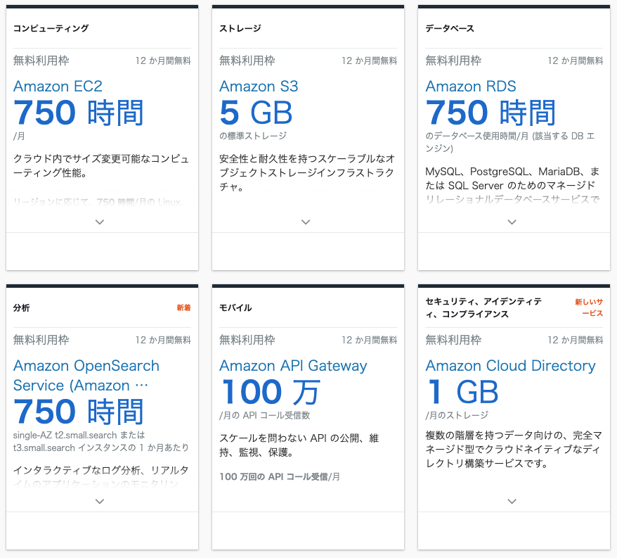
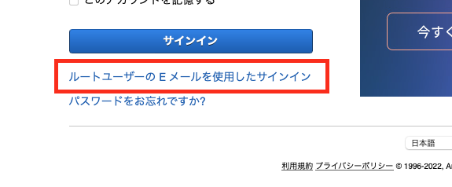
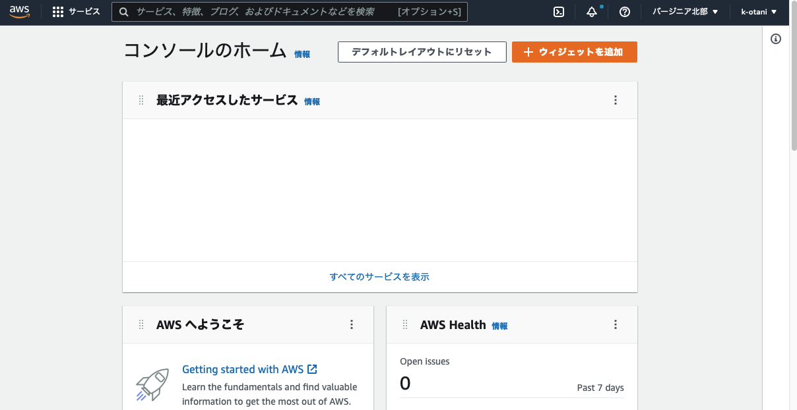

本ハンズオンは以下のような方をターゲットにしています。
- AWS アカウントを契約して使いたいけど、具体的な手順が分からない
- 手順は知っているけど、操作方法が分からなくなったときに質問できないのは不安
- 課金システムが分からない、高額請求が怖い
前提や注意点
ご用意いただきたいもの

- メールアドレス
- クレジットカード／デビットカード
- SMS (ショートメッセージサービス) が届く携帯電話やスマートホンなどの機器
- Google Authenticator
AWS には無料利用枠があります。一部のサービスが一定額まで無料であったり、期間限定で無料で体験できます。
https://aws.amazon.com/jp/free
以下は、無料枠の一部ですが有効期限が 12 ヶ月のものが多いので使えるうちに色々試してしまいましょう！

Amazon Web Service (AWS) を利用するには、AWS アカウントの契約が必要です。
以下リンクをクリックすると、AWS アカウントを作る方法が画面のスクリーンキャプチャー付きで紹介されています。
まずは、この手順に沿ってアカウントを作成してください。
アカウントができたらサインインしてみましょう。
以下 URL からサインインできます。
https://signin.aws.amazon.com/console

上記画面がサインイン画面が表示されたら、

「ルートユーザーの E メールを使用したサインイン」のリンクをクリックしてください。

上記画面に遷移しますので、[ ○ ルートユーザー ] が選択されていることを確認し、メールアドレスを入力して、[ 次へ ] をクリックしてください。

先ほど設定したパスワードでサインインしてください。

上記画面にサインインされたら、成功です。
他のハンズオンで「コンソール画面を開いて」と言われた場合は、この画面 またはこの画面から遷移する AWS サービスの画面を意味しています。
AWS アカウントを契約した際のメールアドレスが、ルートアカウント になります。
ルートユーザーはアカウント内の全てのアクションを行うことができるので、アカウント内の神様とも言える権限があります。

本ハンズオンでは、AWS アカウントの不正アクセスやアカウント乗っ取りなどの被害を防ぐため、多要素認証（MFA） を必須とさせていただいております。

ユーザー名とパスワードに加えて、一時的な認証コードである MFA を合わせることでセキュリティを大幅に強化できます。 各自、App Store などで 「Google Authenticator」 で検索、ダウンロードをお願いします。
Google Authenticator

- Android の方：Google Play
- iPhone の方： App Store
二段階認証の設定
まとめますと、二段階認証は以下のために設定をします。
- アカウントの神様的権限を持つルートユーザーを盗られると大変
- メールアドレス、パスワード以外にもログイン時に必要な情報を追加すべき
AWS マネジメントコンソールを操作して、二段階認証を設定していきます。

アカウント名をクリックして、[ セキュリティ認証情報 ] をクリックします。
セキュリティ認証情報 の画面に遷移するので、[ 多要素認証 (MDA) ] にあります [ MFA の有効化 ] ボタンをクリックしてください。

MFA デバイスの管理 のダイヤログ画面が表示されるので、[ 仮想 MFA デバイス ] が選択されていることを確認して、[ 続行 ] ボタンをクリックします。

MFA デバイスの設定 の画面に遷移するので、[ QA コードの表示 ] というリンクをクリックしてください。
QR コードが表示されます。

Google Authenticator アプリを開き、で読み込んでください。右下の [+] アイコンをタップして、

[QR コードをスキャン] をタップして、QR コードを読み込んでください。

Google Authenticator から発行されたコードを 2 つ入力して、[ MFA の割り当て ] ボタンをクリックしてください。

上記メッセージが表示されたら成功です。
ユーザーを追加しましょう

先ほど MFA を設定したルートユーザーはアカウントの神様的存在ですので、普段は使わないことがベストプラクティスとして推奨されています。
普段使うユーザーは IAM というサービスから作成できます。
IAM ユーザーも盗られると権限によっては大きな被害を受けますので、MFA を設定してください。
AWS IAM とは
AWS Identity and Access Management (IAM) は、誰がどのサービスやリソースに、どのような条件でアクセスできるかを指定することができ、誰がどのような操作を行ったか証跡を取ることにも貢献します。
IAM には、大きく分けて 4 つの機能があります。
グループ
ユーザーをまとめるための機能です。
ユーザー
ロール
ポリシー
AWS アカウントの確認
AWS アカウントは、数字 12 桁の数字で表現されます。
画面上部でマイアカウントをクリックすると、確認できます。
次作業で必要ですので、メモをしておいてください。
サインアウト
AWS マネジメントコンソールでの操作を終えたらサインアウトをします。 画面上部をクリックして、サインアウトを選択します。

CloudTrail の仕組み
AWS の各種サービスは「マネージメントコンソール」、「AWS CLI」、「SDK」、「他AWSサービス」から操作ができますが、ほとんどは API エンドポイントへアクセスします。 CloudTrail はこの AWS アカウント内で実行された API アクションを記録するサービスです。 例えば EC2 インスタンスを削除した場合だと以下などが把握できます。
- Who?
誰が EC2 インスタンスを削除したか追跡できます。 - What?
何台の EC2 インスタンス削除したか追跡できます。 - Where？
どこから削除の API が発信されたか？追跡できます。 - When？
いつ削除の API が送信されたか？追跡できます。
CloudTrail は有事の際に障害切り分けに利用できたり、不正アクセスかどうか判断する材料になったりと大変有効なサービスです。
無料枠で取得できないアクティビティ
すべての管理イベント、データイベント、読み込み専用アクティビティを含むアカウントアクティビティの完全なレコードは CloudTrail の証跡を設定しなければ取得できません。
CloudTrail の料金
CloudTrail はアカウントを作成した直後から有効になります。 証跡の取得自体は料金がかかりませんが、ログを S3 バケットに出力するため S3 バケットの料金がかかります。
詳細は以下サイトに記載されています。
https://aws.amazon.com/jp/cloudtrail/pricing/
ルートユーザーでログインすることで利用可能です。